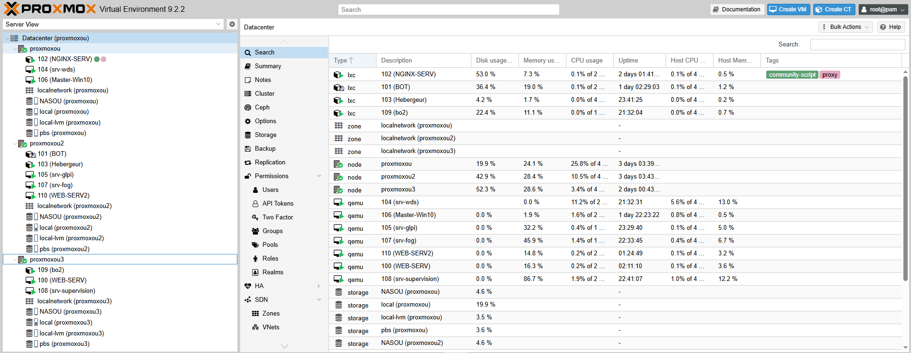
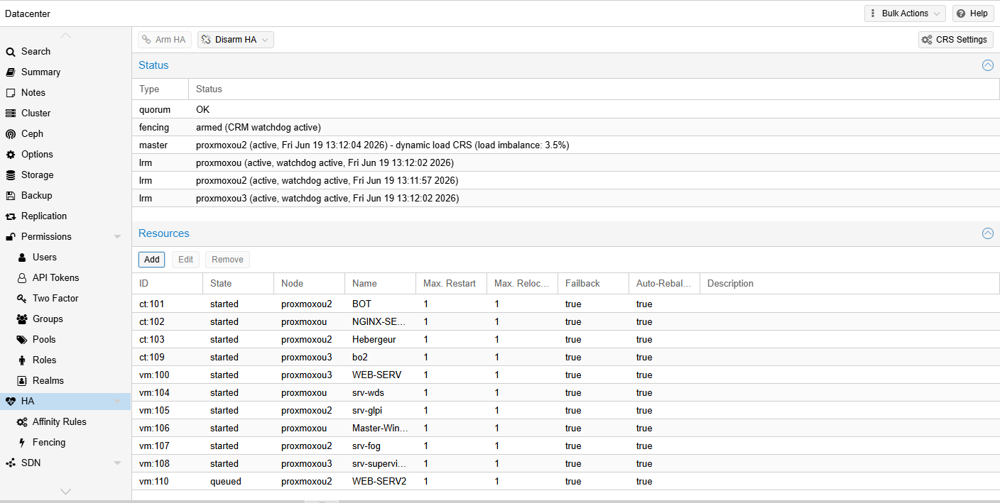
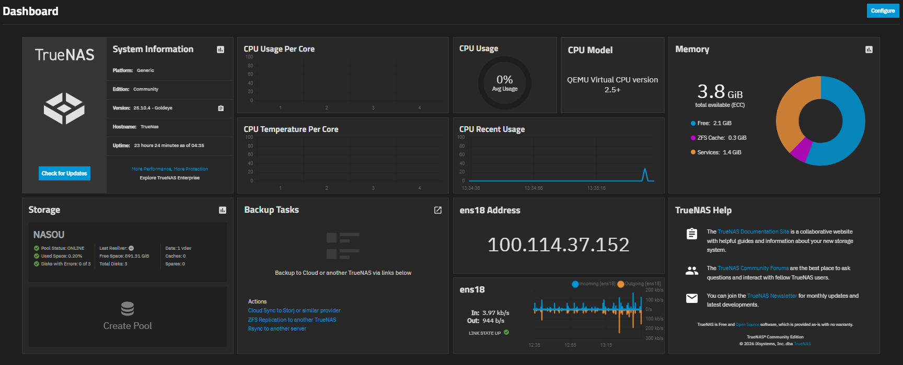
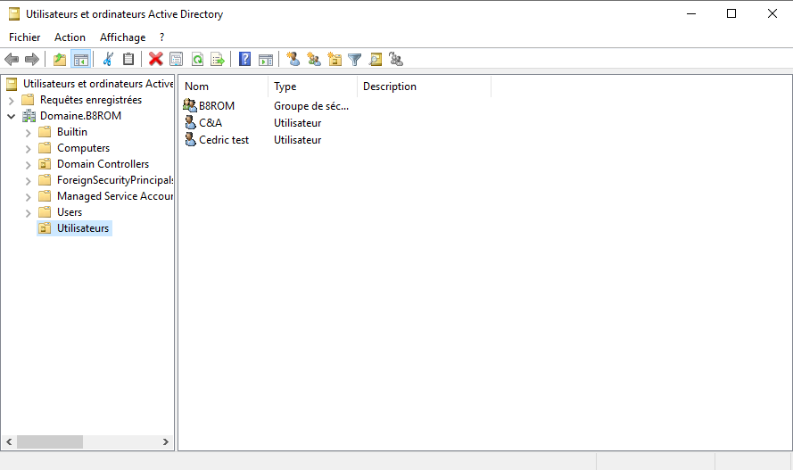
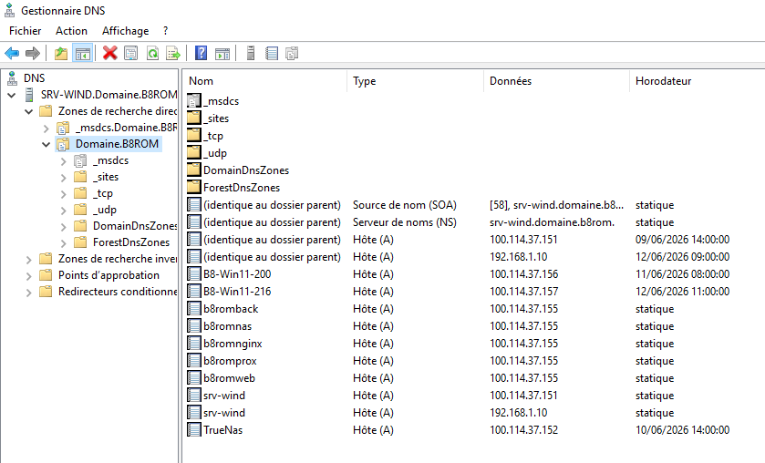
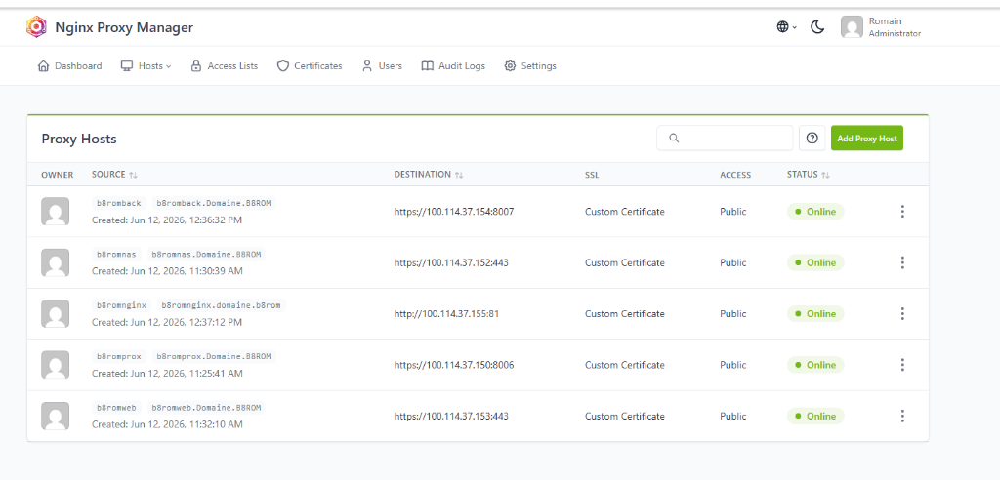
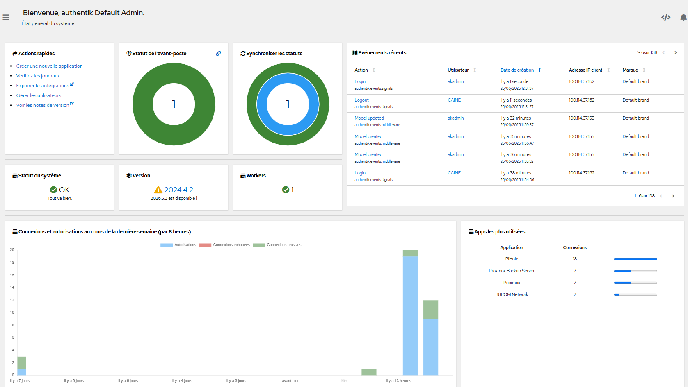
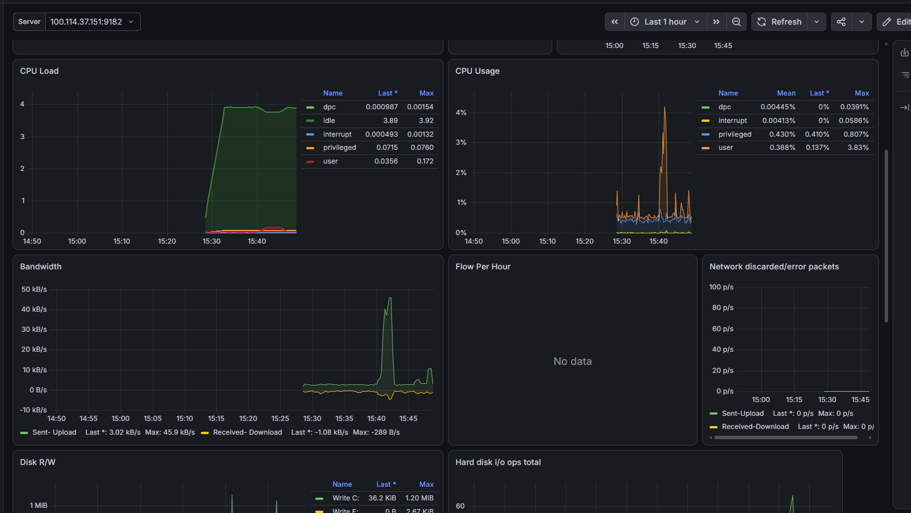
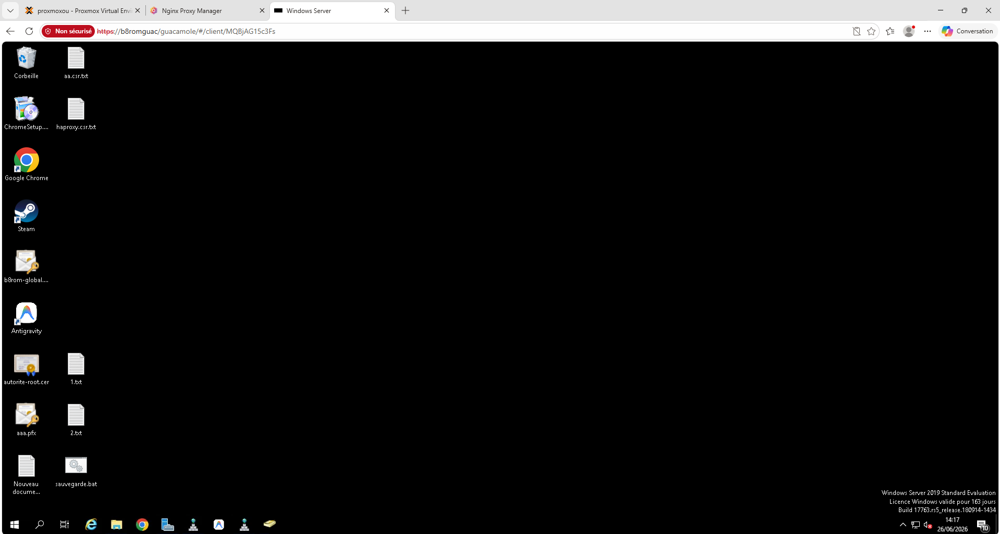

Mise en place d'une infrastructure complète (Virtualisation, Sécurité, Identité, Supervision).
Déploiement d'un cluster à 3 nœuds "Bare Metal" pour consolider les ressources. Activation du Cluster Resource Scheduler (CRS) et de la migration à chaud (Live Migration) pour garantir une Haute Disponibilité (HA).


Déploiement d'un NAS TrueNAS utilisant le système de fichiers ZFS. Connexion du NAS à l'Active Directory pour gérer les ACLs (droits d'accès), et intégration de stockages iSCSI/NFS pour le cluster Proxmox.

Promotion d'un Windows Server en Contrôleur de Domaine (B8ROM). Structuration des Unités d'Organisation (OU) et configuration du DNS pour la résolution de noms internes. Mise en place de GPO (Stratégies de Groupe) pour la redirection des dossiers utilisateurs.


Sécurisation des accès web internes via Nginx Proxy Manager et des certificats Wildcard générés par notre propre PKI (AD CS). Mise en place d'un portail Single Sign-On (SSO) via Authentik pour une authentification unifiée sur tous les services.


Maintien en Conditions Opérationnelles (MCO) assuré par une stack Prometheus & Grafana pour monitorer l'état CPU/RAM/Disque en temps réel. Mise en place de Apache Guacamole pour permettre l'accès distant (RDP/SSH) sécurisé via navigateur.

